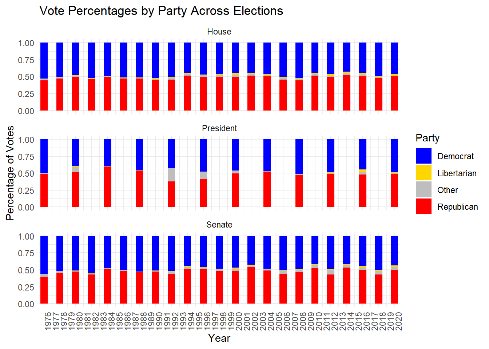
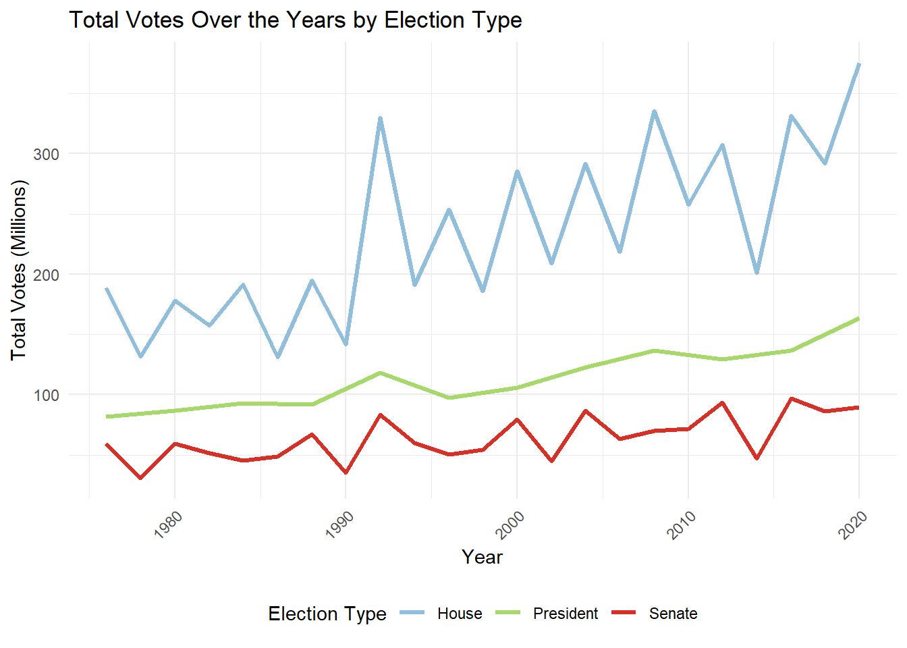
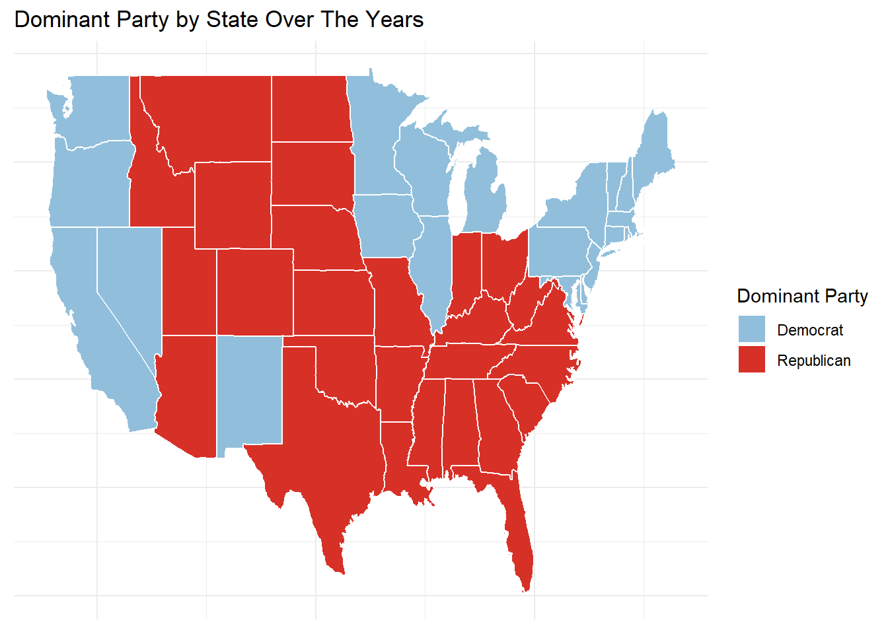
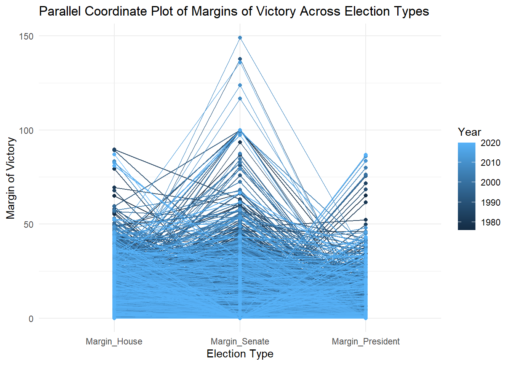
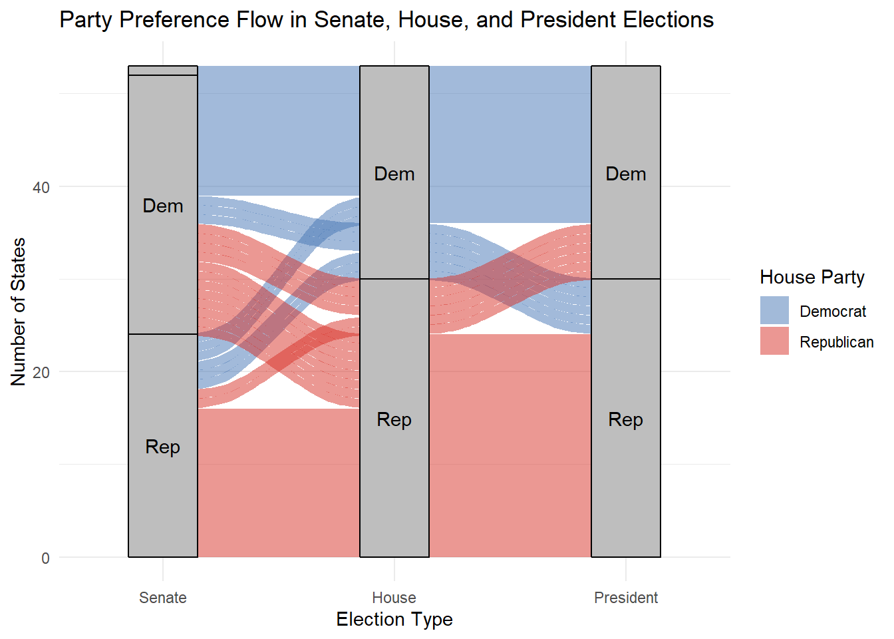
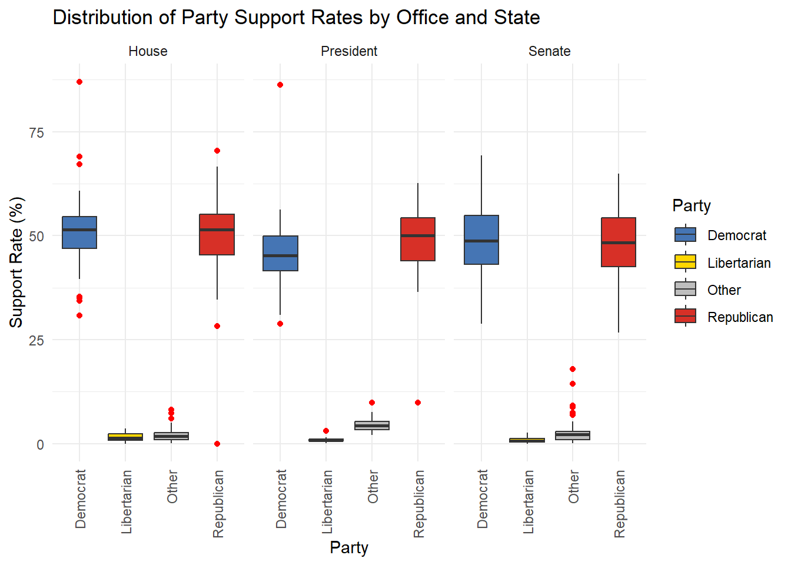
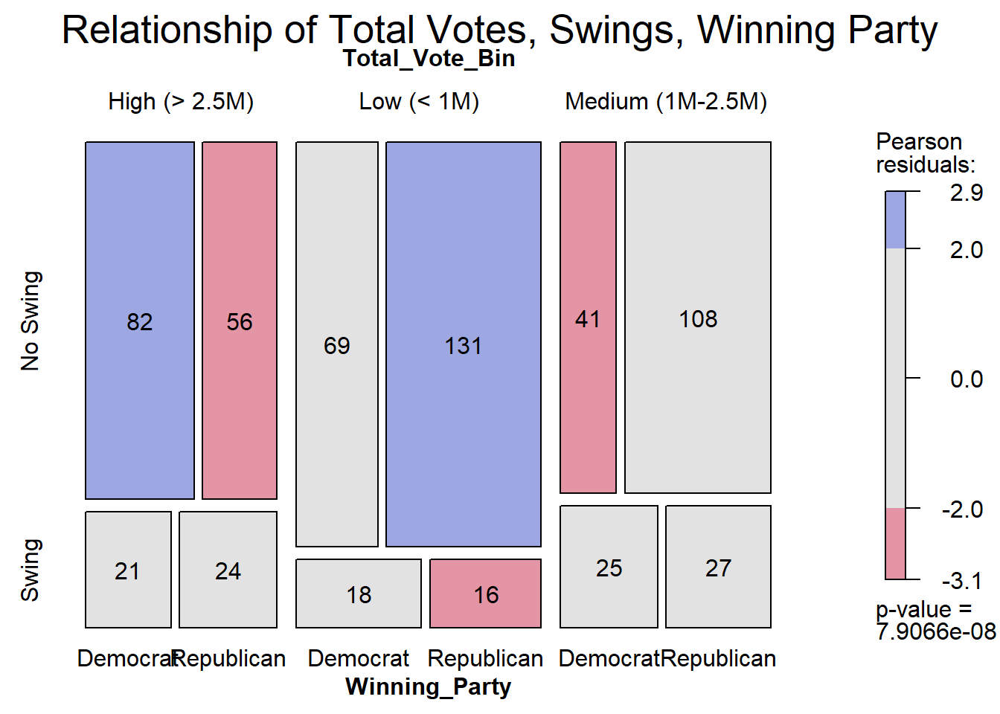

Code
data <- read.csv('joined_data.csv')data <- read.csv('joined_data.csv')##Stacked Bar Chart of Vote Percentages by Party Across Elections

The stacked bar chart depicts the percentage of votes received by Democrats, Republicans, Libertarians, and other parties across House, Senate, and Presidential elections over the years. In all election types, the chart highlights the dominance of Democrats and Republicans, with third-party candidates consistently receiving only a small fraction of the vote. Presidential elections show slightly higher third-party participation, such as in 1992 and 2016, where “Other” parties gained noticeable shares, reflecting unique election dynamics in those years. House and Senate elections demonstrate remarkable stability in the two-party system, with Democrats and Republicans each capturing approximately half of the total vote, though regional and state-level shifts likely contribute to variations in specific years. The overall trend underscores the entrenched dominance of the two-party system in U.S. politics and the limited but notable impact of third-party candidates in Presidential elections compared to Congressional races.
##Highlighted Bar Chart of State Each Party Won By Election
# Prepare the data to determine the winning party
winning_party_data <- joined_data |>
mutate(Election_Type = "House") |>
select(year, Election_Type, DEMOCRAT_House, REPUBLICAN_House) |>
rename(
DEMOCRAT = DEMOCRAT_House,
REPUBLICAN = REPUBLICAN_House
) |>
mutate(
DEMOCRAT = replace_na(DEMOCRAT, 0),
REPUBLICAN = replace_na(REPUBLICAN, 0)
) |>
filter(DEMOCRAT != 0 | REPUBLICAN != 0) |>
filter(DEMOCRAT != REPUBLICAN) |>
mutate(
Winner = ifelse(DEMOCRAT > REPUBLICAN, "Democrat", "Republican")
) |>
bind_rows(
joined_data |>
mutate(Election_Type = "Senate") |>
select(year, Election_Type, DEMOCRAT_Senate, REPUBLICAN_Senate) |>
rename(
DEMOCRAT = DEMOCRAT_Senate,
REPUBLICAN = REPUBLICAN_Senate
) |>
mutate(
DEMOCRAT = replace_na(DEMOCRAT, 0),
REPUBLICAN = replace_na(REPUBLICAN, 0)
) |>
filter(DEMOCRAT != 0 | REPUBLICAN != 0) |>
filter(DEMOCRAT != REPUBLICAN) |>
mutate(
Winner = ifelse(DEMOCRAT > REPUBLICAN, "Democrat", "Republican")
),
joined_data |>
mutate(Election_Type = "President") |>
select(year, Election_Type, DEMOCRAT_President, REPUBLICAN_President) |>
rename(
DEMOCRAT = DEMOCRAT_President,
REPUBLICAN = REPUBLICAN_President
) |>
mutate(
DEMOCRAT = replace_na(DEMOCRAT, 0),
REPUBLICAN = replace_na(REPUBLICAN, 0)
) |>
filter(DEMOCRAT != 0 | REPUBLICAN != 0) |>
mutate(
Winner = ifelse(DEMOCRAT > REPUBLICAN, "Democrat", "Republican")
)
)
# Create a bar chart highlighting the winning party
ggplot(winning_party_data, aes(x = factor(year), fill = Winner)) +
geom_bar(stat = "count", position = "dodge") +
facet_wrap(~Election_Type, ncol = 1, scales = "free_x") +
scale_fill_manual(values = c("Democrat" = "#91BFDB", "Republican" = "#D73027")) +
labs(
title = "Winning Party by Year Across Elections",
x = "Year",
y = "Number of State Won",
fill = "Party"
) +
theme_minimal() +
theme(axis.text.x = element_text(angle = 90, hjust = 1))
The bar chart compares the number of states won by Democrats and Republicans across House, Senate, and Presidential elections over the years. For House elections, there is a relatively balanced distribution of states won by both parties, with fluctuations reflecting shifts in voter preferences during midterms and general elections. Presidential elections show more pronounced swings, with notable Republican dominance during landslide years like 1984 and stronger Democratic performance in years such as 1992 and 2008. The Senate elections exhibit greater stability, with each party maintaining a consistent number of states won over time, reflecting entrenched partisan control in many states. Overall, the chart highlights the competitive nature of elections, the influence of national trends on Presidential contests, and the stability of Senate races. These trends emphasize the importance of key battleground states in determining election outcomes, particularly for Presidential and House races.
##Line Chart of Total Votes Over the Years by Election Type
# Prepare the data for all election types
total_votes_data <- joined_data |>
# Select the relevant columns for each election type
select(year, total_house, total_senate, total_president) |>
pivot_longer(
cols = c(total_house, total_senate, total_president),
names_to = "Election_Type",
values_to = "Total_Votes"
) |>
mutate(
Election_Type = case_when(
Election_Type == "total_house" ~ "House",
Election_Type == "total_senate" ~ "Senate",
Election_Type == "total_president" ~ "President"
),
year = as.numeric(year)
) |>
filter(!is.na(Total_Votes) & Total_Votes > 0) |>
group_by(year, Election_Type) |>
summarise(Total_Votes = sum(Total_Votes), .groups = "drop")
# Create the line graph
ggplot(total_votes_data, aes(x = year, y = Total_Votes / 1e6, color = Election_Type)) +
geom_line(size = 1.2) +
scale_color_manual(values = c("House" = "#91BFDB", "Senate" = "#D73027", "President" = "#A6D96A")) +
labs(
title = "Total Votes Over the Years by Election Type",
x = "Year",
y = "Total Votes (Millions)",
color = "Election Type"
) +
theme_minimal() +
theme(
axis.text.x = element_text(angle = 45, hjust = 1),
legend.position = "bottom"
)Warning: Using `size` aesthetic for lines was deprecated in ggplot2 3.4.0.
ℹ Please use `linewidth` instead.
The line chart illustrates total votes cast over the years across House, Senate, and Presidential elections, revealing distinct trends in voter participation. Presidential elections consistently show an upward trend in voter turnout, reflecting their high stakes and national importance, with a noticeable increase in recent decades. In contrast, House elections exhibit significant fluctuations, corresponding to midterm and general election cycles, but the overall trend indicates a steady rise in participation. Senate elections, while generally stable, show consistently lower turnout compared to House and Presidential elections, likely reflecting reduced voter engagement in statewide contests. The growing divergence between Presidential and Senate elections emphasizes the increasing focus on national elections over local contests. Overall, the chart highlights the evolving dynamics of voter participation, with Presidential elections commanding the largest and growing share of voter attention.
##Choropleth Map of Dominant Party by State Over The Years
joined_data_filtered <- joined_data |>
filter(total_president > 0)
joined_data_filtered <- joined_data_filtered |>
mutate(dominant_party = case_when(
DEMOCRAT_President > REPUBLICAN_President &
DEMOCRAT_President > OTHER_President &
DEMOCRAT_President > LIBERTARIAN_President ~ "Democrat",
REPUBLICAN_President > DEMOCRAT_President &
REPUBLICAN_President > OTHER_President &
REPUBLICAN_President > LIBERTARIAN_President ~ "Republican",
OTHER_President > DEMOCRAT_President &
OTHER_President > REPUBLICAN_President &
OTHER_President > LIBERTARIAN_President ~ "Other",
LIBERTARIAN_President > DEMOCRAT_President &
LIBERTARIAN_President > REPUBLICAN_President &
LIBERTARIAN_President > OTHER_President ~ "Libertarian",
TRUE ~ "Tie"
))
state_dominant_party_president <- joined_data_filtered |>
group_by(state) |>
count(dominant_party) |>
slice_max(n) |>
ungroup() |>
mutate(region = tolower(state))
states_map <- map_data("state")
map_data <- left_join(states_map, state_dominant_party_president, by = "region")Warning in left_join(states_map, state_dominant_party_president, by = "region"): Detected an unexpected many-to-many relationship between `x` and `y`.
ℹ Row 3526 of `x` matches multiple rows in `y`.
ℹ Row 1 of `y` matches multiple rows in `x`.
ℹ If a many-to-many relationship is expected, set `relationship =
"many-to-many"` to silence this warning.ggplot(map_data, aes(x = long, y = lat, group = group, fill = dominant_party)) +
geom_polygon(color = "white") +
scale_fill_manual(values = c(
"Democrat" = "#91BFDB",
"Republican" = "#D73027",
"Other" = "gray",
"Libertarian" = "#FDE725",
"Tie" = "purple"
)) +
labs(
title = "Dominant Party by State Over The Years",
fill = "Dominant Party"
) +
theme_minimal() +
theme(axis.text = element_blank(), axis.title = element_blank())
The choropleth map illustrates the dominant political party (Democrat or Republican) by state over the analyzed years, highlighting regional patterns of party control. Republican dominance is evident across much of the South, Midwest, and Mountain West, reflecting strongholds in traditionally conservative states. In contrast, Democrats dominate in the Northeast, West Coast, and parts of the Upper Midwest, showcasing areas of liberal and progressive influence. These patterns align with historical trends, where coastal and urban states lean Democratic, while rural and Southern states favor Republicans. The map underscores the entrenched partisan divisions in the U.S., emphasizing the geographic polarization in voting preferences that shapes national elections. Additionally, it highlights the role of key swing states in breaking these regional trends, which are not apparent in this static analysis of dominance.
##Parallel Coordinates Plot of Margins of Victory Across Election Types
library(GGally)Registered S3 method overwritten by 'GGally':
method from
+.gg ggplot2# Calculate margins of victory
margins_data <- joined_data %>%
# Select relevant columns
select(year, state, DEMOCRAT_House, REPUBLICAN_House, LIBERTARIAN_House,
DEMOCRAT_Senate, REPUBLICAN_Senate, LIBERTARIAN_Senate,
DEMOCRAT_President, REPUBLICAN_President, LIBERTARIAN_President) %>%
mutate(
Margin_House = abs(DEMOCRAT_House - REPUBLICAN_House),
Margin_Senate = abs(DEMOCRAT_Senate - REPUBLICAN_Senate),
Margin_President = abs(DEMOCRAT_President - REPUBLICAN_President)
) %>%
select(year, state, Margin_House, Margin_Senate, Margin_President) %>%
filter(!is.na(Margin_House) & !is.na(Margin_Senate) & !is.na(Margin_President))
# Create the parallel coordinate plot
ggparcoord(
data = margins_data,
columns = 3:5, # Columns for Margin_House, Margin_Senate, Margin_President
groupColumn = 1, # Group by year
scale = "globalminmax", # Scale all axes to a common range
showPoints = TRUE, # Add points to the lines
alphaLines = 0.9 # Increase transparency to make lines more visible
) +
labs(
title = "Parallel Coordinate Plot of Margins of Victory Across Election Types",
x = "Election Type",
y = "Margin of Victory",
color = "Year"
) +
theme_minimal()The parallel coordinate plot visualizes the margins of victory across House, Senate, and Presidential elections over time, with color intensity indicating election years. The majority of election margins fall within a consistent range, demonstrating relatively stable competitiveness across the three election types. However, Senate elections often show the largest margins of victory, highlighting reduced competitiveness in many states compared to House and Presidential races. Presidential elections tend to have narrower margins, reflecting a closer two-party competition at the national level. The progression of colors from darker (earlier years) to lighter (more recent years) shows that the overall pattern remains consistent over decades, with occasional spikes indicating landslide victories. This analysis underscores the varying competitiveness of different election types, with Senate races often being less contested, and Presidential elections remaining the most tightly fought contests.
##Alluvial Chart of Party Preference Flow in Senate, House, and President Elections
library(ggalluvial)
joined_data_filtered_house <- joined_data %>%
filter(total_house > 0)
joined_data_filtered_house <- joined_data_filtered_house %>%
mutate(dominant_party_house = case_when(
DEMOCRAT_House > REPUBLICAN_House &
DEMOCRAT_House > OTHER_House &
DEMOCRAT_House > LIBERTARIAN_House ~ "Democrat",
REPUBLICAN_House > DEMOCRAT_House &
REPUBLICAN_House > OTHER_House &
REPUBLICAN_House > LIBERTARIAN_House ~ "Republican",
OTHER_House > DEMOCRAT_House &
OTHER_House > REPUBLICAN_House &
OTHER_House > LIBERTARIAN_House ~ "Other",
LIBERTARIAN_House > DEMOCRAT_House &
LIBERTARIAN_House > REPUBLICAN_House &
LIBERTARIAN_House > OTHER_House ~ "Libertarian",
TRUE ~ "Tie"
))
state_dominant_party_house <- joined_data_filtered_house %>%
group_by(state) %>%
count(dominant_party_house) %>%
slice_max(n) %>%
ungroup() %>%
mutate(region = tolower(state))
joined_data_filtered_senate <- joined_data %>%
filter(total_senate > 0)
joined_data_filtered_senate <- joined_data_filtered_senate %>%
mutate(dominant_party_senate = case_when(
DEMOCRAT_Senate > REPUBLICAN_Senate &
DEMOCRAT_Senate > OTHER_Senate &
DEMOCRAT_Senate > LIBERTARIAN_Senate ~ "Democrat",
REPUBLICAN_Senate > DEMOCRAT_Senate &
REPUBLICAN_Senate > OTHER_Senate &
REPUBLICAN_Senate > LIBERTARIAN_Senate ~ "Republican",
OTHER_Senate > DEMOCRAT_Senate &
OTHER_Senate > REPUBLICAN_Senate &
OTHER_Senate > LIBERTARIAN_Senate ~ "Other",
LIBERTARIAN_Senate > DEMOCRAT_Senate &
LIBERTARIAN_Senate > REPUBLICAN_Senate &
LIBERTARIAN_Senate > OTHER_Senate ~ "Libertarian",
TRUE ~ "Tie"
))
state_dominant_party_senate <- joined_data_filtered_senate %>%
group_by(state) %>%
count(dominant_party_senate) %>%
slice_max(n) %>%
ungroup() %>%
mutate(region = tolower(state))
alluvial_data <- state_dominant_party_president %>%
select(state, dominant_party_president = dominant_party) %>%
left_join(
state_dominant_party_house %>%
select(state, dominant_party_house = dominant_party_house),
by = "state"
) %>%
left_join(
state_dominant_party_senate %>%
select(state, dominant_party_senate = dominant_party_senate),
by = "state"
) %>%
mutate(count = 1)
ggplot(alluvial_data,
aes(axis1 = dominant_party_senate,
axis2 = dominant_party_house,
axis3 = dominant_party_president,
y = count)) +
geom_alluvium(aes(fill = dominant_party_house), width = 0.2) +
geom_stratum(width = 0.3, fill = "grey", color = "black") +
geom_text(stat = "stratum", aes(label = recode(after_stat(stratum),
"Democrat" = "Dem",
"Republican" = "Rep",
"Libertarian" = "Lib",
"Other" = "Oth",
"Tie" = "Tie"))) +
scale_x_discrete(limits = c("Senate", "House", "President"), expand = c(0.15, 0.15)) +
scale_fill_manual(values = c(
"Democrat" = "#4575B4",
"Republican" = "#D73027",
"Other" = "#808080",
"Libertarian" = "#FFD700",
"Tie" = "#FFFFBF"
)) +
labs(
title = "Party Preference Flow in Senate, House, and President Elections",
x = "Election Type",
y = "Number of States",
fill = "House Party"
) +
theme_minimal()Warning in to_lodes_form(data = data, axes = axis_ind, discern =
params$discern): Some strata appear at multiple axes.
Warning in to_lodes_form(data = data, axes = axis_ind, discern =
params$discern): Some strata appear at multiple axes.
Warning in to_lodes_form(data = data, axes = axis_ind, discern =
params$discern): Some strata appear at multiple axes.
The Alluvial diagram illustrates the flow of party preferences across Senate, House, and Presidential elections, highlighting shifts in political dominance across states. A majority of states maintain consistent party alignment between election types, with most Democratic-leaning states (Dem) staying blue across all categories and Republican-leaning states (Rep) remaining red. However, the crossover flows between Senate and House elections indicate some variability in party preferences, suggesting that voters may differentiate between the roles of these offices when casting their ballots. Presidential elections display the most alignment with House results, reflecting a correlation between federal-level executive and legislative preferences. The overall pattern reinforces the dominance of the two-party system while highlighting the nuanced shifts that occur across election types, particularly in competitive states where control may alternate between Democrats and Republicans.
##Line Graph of Total Votes Over Years by State
# Prepare the data
state_votes_data <- joined_data %>%
select(year, state, total_house, total_senate, total_president) %>%
mutate(
Total_Votes = total_house + total_senate + total_president
) %>%
group_by(year, state) %>%
summarise(Total_Votes = sum(Total_Votes, na.rm = TRUE), .groups = "drop") %>%
filter(all(!is.na(Total_Votes)) & Total_Votes > 0) # Remove years with missing or zero data
# Identify outliers
outliers <- state_votes_data %>%
group_by(state) %>%
summarise(Max_Votes = max(Total_Votes), .groups = "drop") %>%
top_n(5, Max_Votes) # Select top 5 states with highest total votes
# Create the plot
ggplot() +
# Add lines for all states
geom_line(
data = state_votes_data,
aes(x = year, y = Total_Votes / 1e6, group = state),
color = "gray", size = 0.7, show.legend = FALSE
) +
# Add lines for outlier states with legend
geom_line(
data = state_votes_data %>% filter(state %in% outliers$state),
aes(x = year, y = Total_Votes / 1e6, color = state, group = state),
size = 1.2
) +
labs(
title = "Total Votes Over Years by State",
x = "Year",
y = "Total Votes (Millions)",
color = "Outlier States"
) +
theme_minimal() +
theme(
axis.text.x = element_text(angle = 45, hjust = 1),
legend.position = "bottom"
)
The line chart displays the total number of votes cast in elections over time, segmented by state, with outlier states highlighted. The chart reveals that states such as California, Texas, New York, Florida, and Georgia consistently show higher total votes compared to other states, reflecting their larger populations and electoral significance. California, in particular, stands out with a sharp spike in total votes around the early 1990s and steady high turnout in subsequent years. Other large states like Texas and New York exhibit similar trends with noticeable peaks in presidential election years. The overall pattern suggests higher voter participation in populous states, especially during major national elections. In contrast, smaller states maintain relatively stable and lower vote totals over time, with limited fluctuations. These trends underscore the outsized influence of populous states in shaping electoral outcomes and highlight the importance of analyzing voter turnout patterns for understanding regional and national political dynamics.
##Boxplot Showing Distribution of Party Support Rates by State
boxplot_data <- joined_data |>
filter(
DEMOCRAT_House + REPUBLICAN_House + LIBERTARIAN_House + OTHER_House > 0 |
DEMOCRAT_Senate + REPUBLICAN_Senate + LIBERTARIAN_Senate + OTHER_Senate > 0 |
DEMOCRAT_President + REPUBLICAN_President + LIBERTARIAN_President + OTHER_President > 0
) |>
group_by(state) |>
summarise(
House_Democrat = mean(DEMOCRAT_House[DEMOCRAT_House + REPUBLICAN_House + LIBERTARIAN_House + OTHER_House > 0], na.rm = TRUE),
House_Republican = mean(REPUBLICAN_House[DEMOCRAT_House + REPUBLICAN_House + LIBERTARIAN_House + OTHER_House > 0], na.rm = TRUE),
House_Libertarian = mean(LIBERTARIAN_House[DEMOCRAT_House + REPUBLICAN_House + LIBERTARIAN_House + OTHER_House > 0], na.rm = TRUE),
House_Other = mean(OTHER_House[DEMOCRAT_House + REPUBLICAN_House + LIBERTARIAN_House + OTHER_House > 0], na.rm = TRUE),
Senate_Democrat = mean(DEMOCRAT_Senate[DEMOCRAT_Senate + REPUBLICAN_Senate + LIBERTARIAN_Senate + OTHER_Senate > 0], na.rm = TRUE),
Senate_Republican = mean(REPUBLICAN_Senate[DEMOCRAT_Senate + REPUBLICAN_Senate + LIBERTARIAN_Senate + OTHER_Senate > 0], na.rm = TRUE),
Senate_Libertarian = mean(LIBERTARIAN_Senate[DEMOCRAT_Senate + REPUBLICAN_Senate + LIBERTARIAN_Senate + OTHER_Senate > 0], na.rm = TRUE),
Senate_Other = mean(OTHER_Senate[DEMOCRAT_Senate + REPUBLICAN_Senate + LIBERTARIAN_Senate + OTHER_Senate > 0], na.rm = TRUE),
President_Democrat = mean(DEMOCRAT_President[DEMOCRAT_President + REPUBLICAN_President + LIBERTARIAN_President + OTHER_President > 0], na.rm = TRUE),
President_Republican = mean(REPUBLICAN_President[DEMOCRAT_President + REPUBLICAN_President + LIBERTARIAN_President + OTHER_President > 0], na.rm = TRUE),
President_Libertarian = mean(LIBERTARIAN_President[DEMOCRAT_President + REPUBLICAN_President + LIBERTARIAN_President + OTHER_President > 0], na.rm = TRUE),
President_Other = mean(OTHER_President[DEMOCRAT_President + REPUBLICAN_President + LIBERTARIAN_President + OTHER_President > 0], na.rm = TRUE)
) |>
pivot_longer(
cols = -state,
names_to = c("Office", "Party"),
names_sep = "_",
values_to = "SupportRate"
)
ggplot(boxplot_data, aes(x = Party, y = SupportRate, fill = Party)) +
geom_boxplot(outlier.color = "red", outlier.shape = 16) +
labs(
title = "Distribution of Party Support Rates by Office and State",
x = "Party", y = "Support Rate (%)"
) +
scale_fill_manual(values = c(
"Democrat" = "#4575B4",
"Republican" = "#D73027",
"Libertarian" = "#FFD700",
"Other" = "grey"
)) +
theme_minimal() +
theme(
axis.text.x = element_text(angle = 90, hjust = 1, vjust = 0.5)
) +
facet_wrap(~ Office)Warning: Removed 4 rows containing non-finite outside the scale range
(`stat_boxplot()`).
The box plot displays the distribution of party support rates for Democrats, Republicans, Libertarians, and other parties across House, Senate, and Presidential elections. Key observations highlight that Democrats and Republicans consistently receive higher median support rates compared to third parties, with Republicans often achieving slightly higher medians, especially in Senate and Presidential elections. Libertarian and other parties have significantly lower support rates, with outliers indicating occasional higher-than-usual performances. Presidential elections show a narrower interquartile range for major parties, reflecting a more competitive two-party system compared to House and Senate races. In contrast, House elections exhibit a slightly broader range, indicating more variability in party support across states. Overall, the data underscores the dominance of the two major parties, with third-party influence remaining marginal across all election types.
##Bar Chart of Total Swings by State for Presidential Elections
# Step 1: Filter and clean the data for Presidential elections
cleaned_data <- joined_data %>%
select(year, state, DEMOCRAT_President, REPUBLICAN_President, total_president) %>%
filter(!is.na(DEMOCRAT_President) & !is.na(REPUBLICAN_President) & total_president > 0) %>% # Remove missing or zero data
arrange(state, year) # Ensure proper ordering by state and year
# Step 2: Identify winning party and swings
swing_data <- cleaned_data %>%
mutate(
Winning_Party = case_when(
DEMOCRAT_President > REPUBLICAN_President ~ "Democrat",
REPUBLICAN_President > DEMOCRAT_President ~ "Republican",
TRUE ~ "Tie"
)
) %>%
group_by(state) %>%
mutate(
Previous_Winner = lag(Winning_Party),
Swing = ifelse(Winning_Party != Previous_Winner & !is.na(Previous_Winner), "Swing", "No Swing")
) %>%
ungroup()
# Step 3: Summarize winning proportions by state
swing_summary <- swing_data %>%
group_by(state, Winning_Party) %>%
summarise(Years_Won = n(), .groups = "drop") %>%
group_by(state) %>%
mutate(Proportion = Years_Won / sum(Years_Won))
# Step 4: Count swings by state
swing_counts <- swing_data %>%
filter(Swing == "Swing") %>%
count(state, name = "Swing_Count")
# Step 5: Visualize the swings
ggplot(swing_counts, aes(x = reorder(state, Swing_Count), y = Swing_Count, fill = Swing_Count)) +
geom_bar(stat = "identity") +
scale_fill_gradient(low = "lightblue", high = "darkblue") +
labs(
title = "Total Swings by State (Presidential Elections)",
x = "State",
y = "Number of Swings"
) +
theme_minimal() +
theme(
axis.text.x = element_text(angle = 45, hjust = 1),
legend.position = "none"
)
The bar chart illustrates the number of presidential election swings by state, highlighting variations in political dynamics across the country. States like Ohio, Florida, and Wisconsin exhibit the highest number of swings, each showing five transitions between parties over the analyzed years. These states are traditionally considered swing states due to their competitive nature and pivotal role in determining election outcomes. Conversely, most states show only one or two swings, indicating strong partisan consistency and less variability in voting patterns. This analysis underscores the importance of a few key states in shaping presidential elections, emphasizing their significant influence in determining the overall political landscape. The consistent swings in states like Ohio and Florida reaffirm their critical status in election strategies.
##Relationship Between Total Votes, Swings, and Winning Party for Presidential Elections
library(dplyr)
library(vcd)Warning: package 'vcd' was built under R version 4.4.2Loading required package: grid# Step 1: Prepare the data
mosaic_data <- joined_data %>%
select(year, state, total_president, DEMOCRAT_President, REPUBLICAN_President) %>%
filter(!is.na(total_president) & total_president > 0) %>%
mutate(
Total_Vote_Bin = case_when(
total_president < 1e6 ~ "Low (< 1M)",
total_president < 2.5e6 ~ "Medium (1M-2.5M)",
TRUE ~ "High (> 2.5M)"
),
Winning_Party = case_when(
DEMOCRAT_President > REPUBLICAN_President ~ "Democrat",
REPUBLICAN_President > DEMOCRAT_President ~ "Republican",
TRUE ~ "Tie"
),
Swing = ifelse(
DEMOCRAT_President > REPUBLICAN_President & lag(REPUBLICAN_President, default = NA) > DEMOCRAT_President |
REPUBLICAN_President > DEMOCRAT_President & lag(DEMOCRAT_President, default = NA) > REPUBLICAN_President,
"Swing",
"No Swing"
)
) %>%
filter(!is.na(Swing)) # Remove rows where Swing calculation might be invalid
# Step 2: Summarize the data for a contingency table
mosaic_table <- table(
Total_Vote_Bin = mosaic_data$Total_Vote_Bin,
Swing = mosaic_data$Swing,
Winning_Party = mosaic_data$Winning_Party
)
# Step 3: Create the mosaic plot
mosaic(
mosaic_table,
main = "Relationship of Total Votes, Swings, Winning Party",
shade = TRUE, # Automatically adds shading for distinction
direction = "v", # Use vertical divisions
legend = TRUE, # Include a legend for shading
labeling = labeling_values, # Add value labels inside the plot
labeling_args = list(
offset_labels = c(left = 1, top = 0.5), # Adjust label offsets for readability
offset_varnames = c(left = 2, top = 1) # Adjust variable name offsets
)
)
The mosaic plot reveals distinct patterns in electoral outcomes based on total votes, swing status, and winning party. In high-turnout elections (over 2.5 million votes), Democrats dominate in “No Swing” scenarios, with residuals indicating they overperform compared to expectations. Conversely, Republicans excel in low-turnout elections (under 1 million votes), particularly in “No Swing” cases, where their strong performance aligns with residual patterns. Swing elections, regardless of turnout, tend to exhibit a more balanced competition between the two parties, with Democrats performing slightly better in “Swing” scenarios across all turnout bins. Overall, the plot highlights the strong association between turnout levels and party dominance, with Democrats thriving in high-turnout environments and Republicans leveraging their advantage in lower-turnout contests. These findings suggest that voter turnout plays a critical role in shaping electoral outcomes and party success.